AI 视觉创作
运用 Stable Diffusion、LoRA 模型训练与提示词调优，实现室内风格迁移及角色、场景、道具概念图创作。

设计 × 传播 × AI
美术指导 / AIGC 创作
拥有设计与传播跨领域背景，融合视觉美学、文案逻辑与叙事思维，专注 AI 视觉创作、风格体系搭建与内容策划。具备从创意策划、模型训练到视觉资产制作的完整实践经验。
运用 Stable Diffusion、LoRA 模型训练与提示词调优，实现室内风格迁移及角色、场景、道具概念图创作。
结合空间、平面与产品设计基础，制定视觉模板与风格规范，搭建提示词库及共享素材库，保持视觉内容的一致性。
结合用户需求与审美趋势策划内容，完成展示文案、短剧剧本及社群传播内容，将文字创意转化为视觉表达。
制定模型训练及质量验证标准，统筹任务分配与交付。曾支持团队年产 500+ LoRA 模型，推动交付效率提升 30% 以上。
2026 — 2019
工作 / 01
AI短片创作 / IP内容开发
负责原创IP角色开发及AI短片全流程制作，熟练运用TapNow等主流AI创作工具，独立完成创意策划、剧本编写、分镜设计、AI图像与视频生成及后期剪辑，确保角色形象统一、画面连贯及成片质量。
工作 / 02
AI 美术指导
负责角色、场景与道具概念图制作，建立视觉模板、提示词库及共享美术素材库。
工作 / 03
美术指导
负责内容策划、LoRA 模型训练及团队任务管理，参与智能创作产品风格体系与 Chatbot 助手系统建设。
教育 / 04
传播硕士学业学程
主修传播与文化、符号学、叙事学
教育 / 05
创意生活设计系
主修空间、平面与产品设计
01 — AI VIDEO
AI短片创作 / IP内容开发
从原创 IP 角色开发到 AI 短片全流程制作，独立完成创意策划、剧本编写、分镜设计、AI 图像与视频生成及后期剪辑。
内容策划 → 故事与分镜 → 美术资产 → AI影像 → 后期制作


服装类 / FASHION VISUALS
项目名称ISOMORPHISM WITH URBAN ARCHITECTURE
浏览完整作品
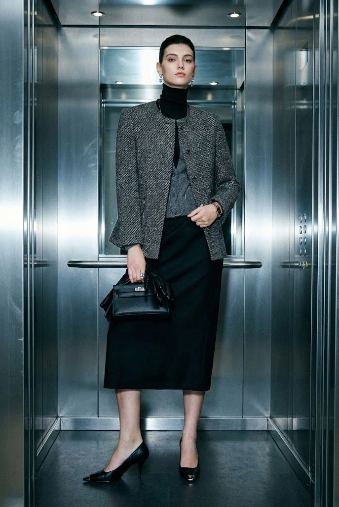
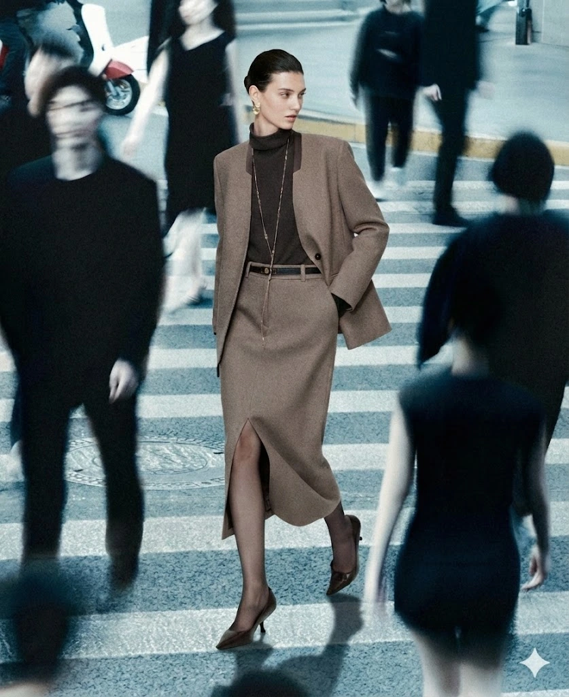
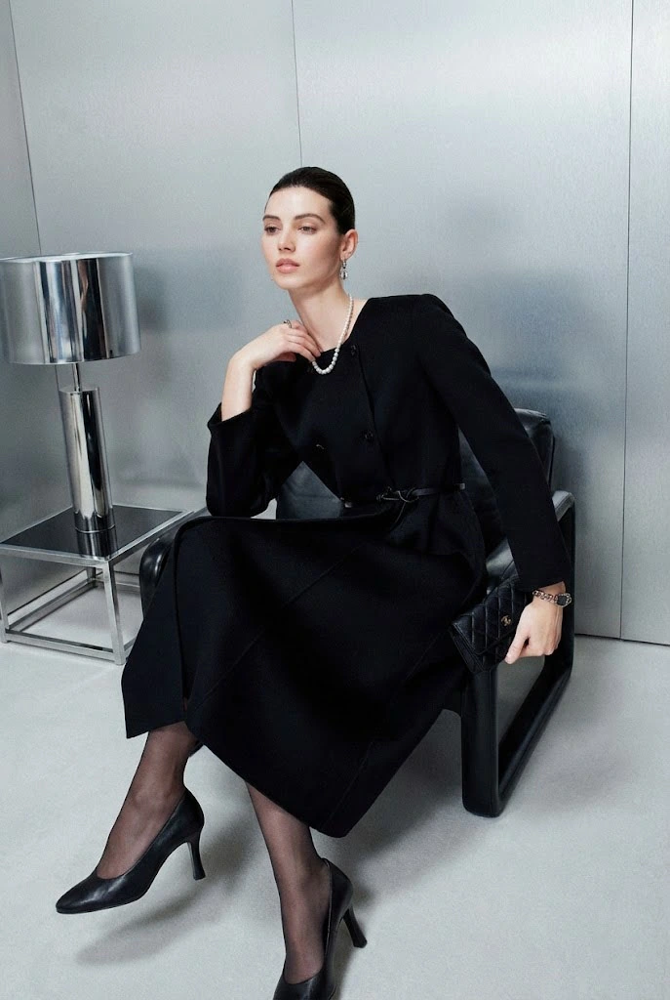
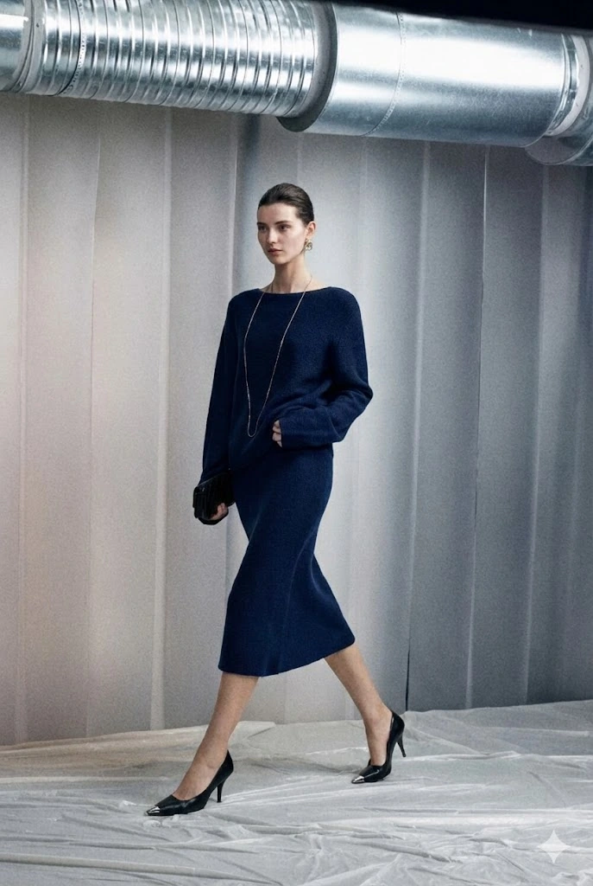
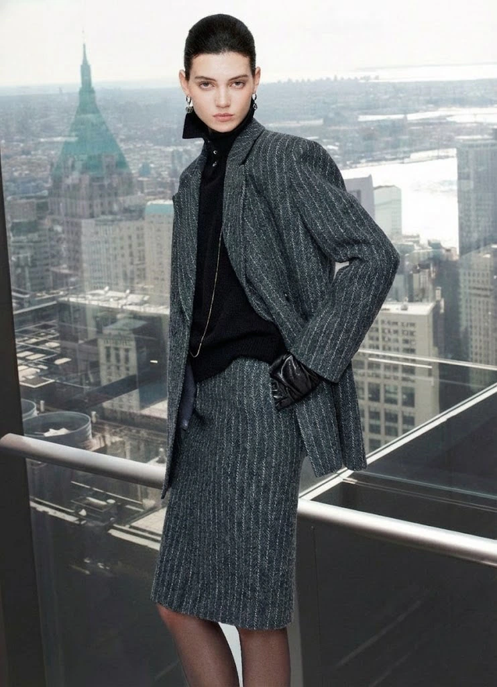


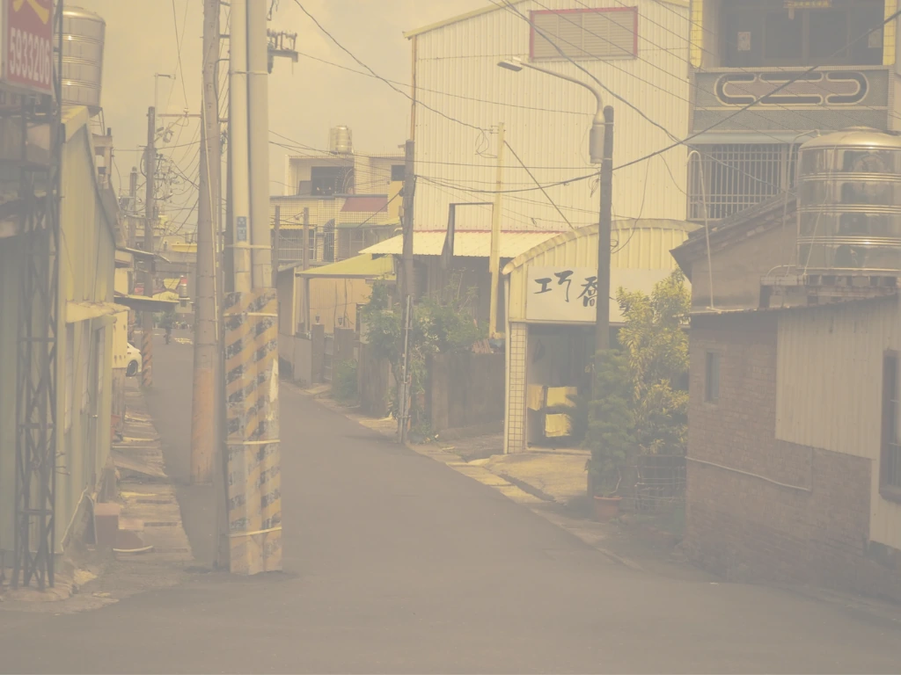

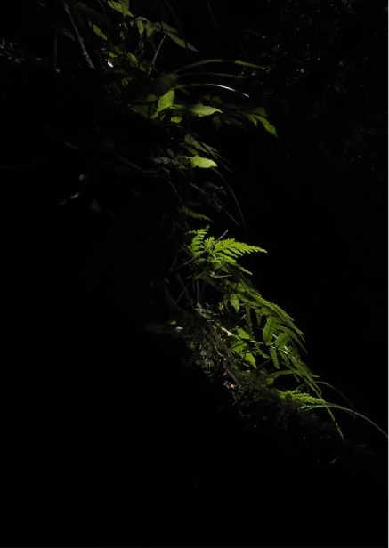
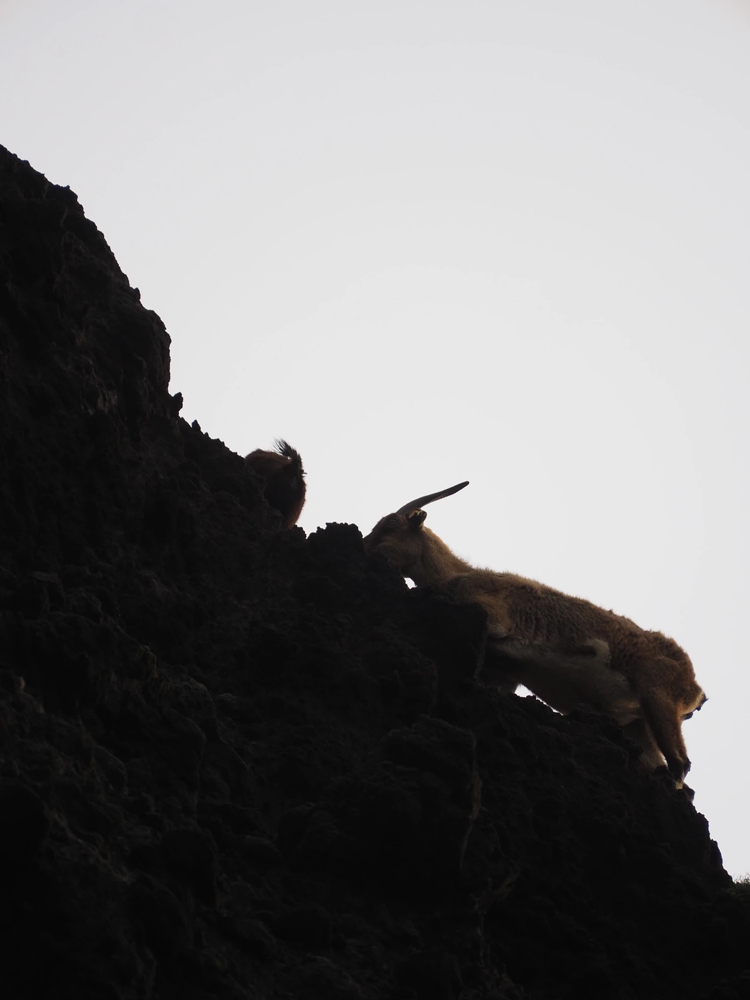

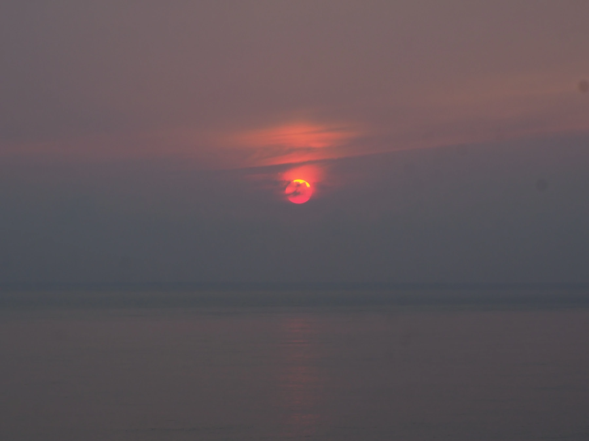

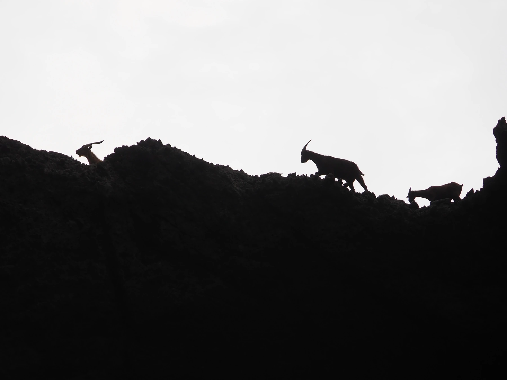
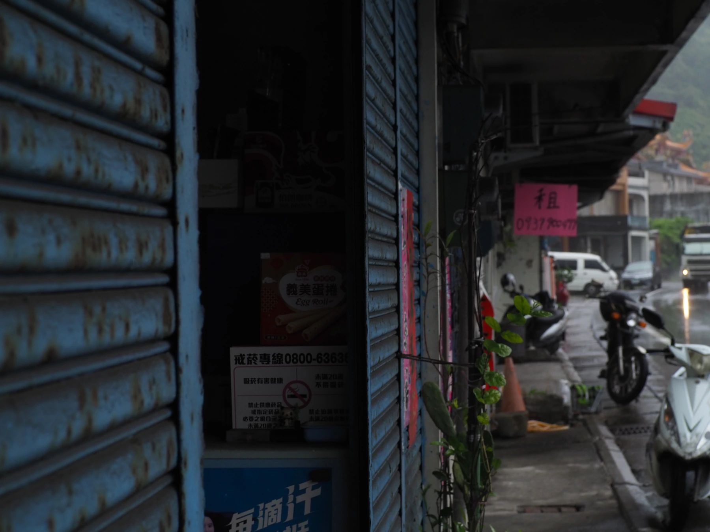
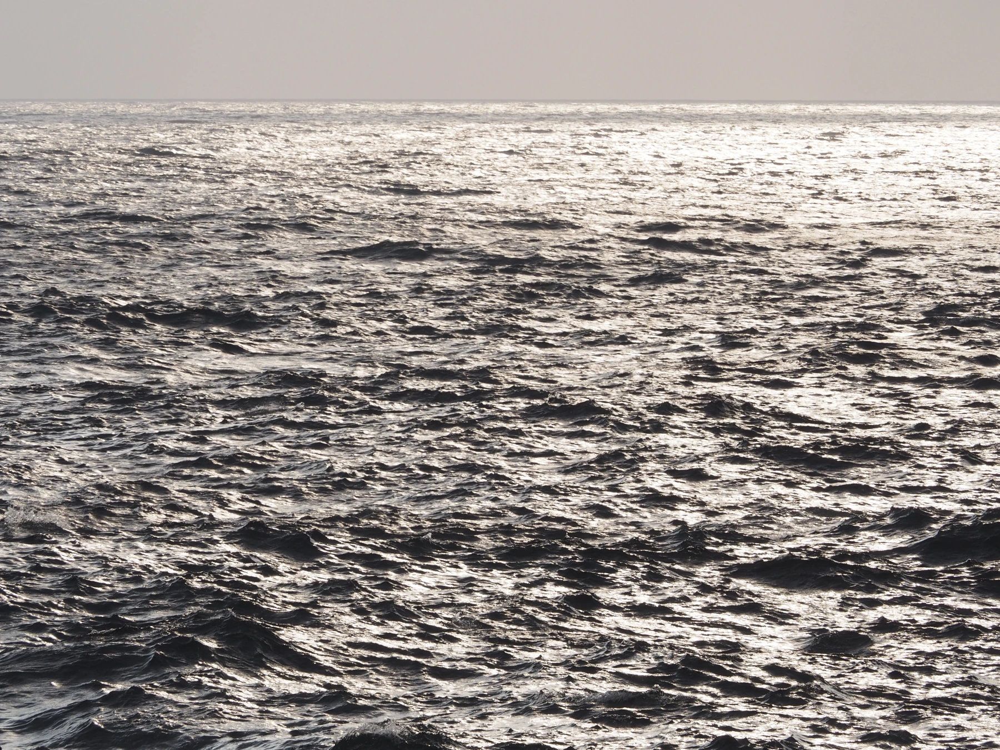
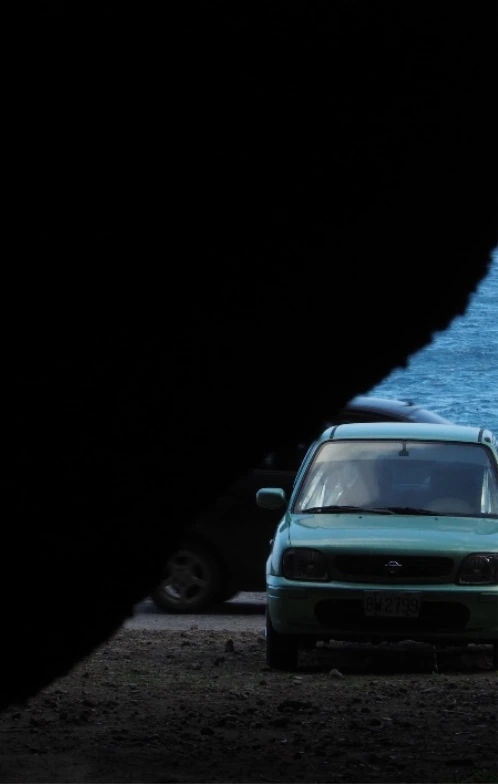
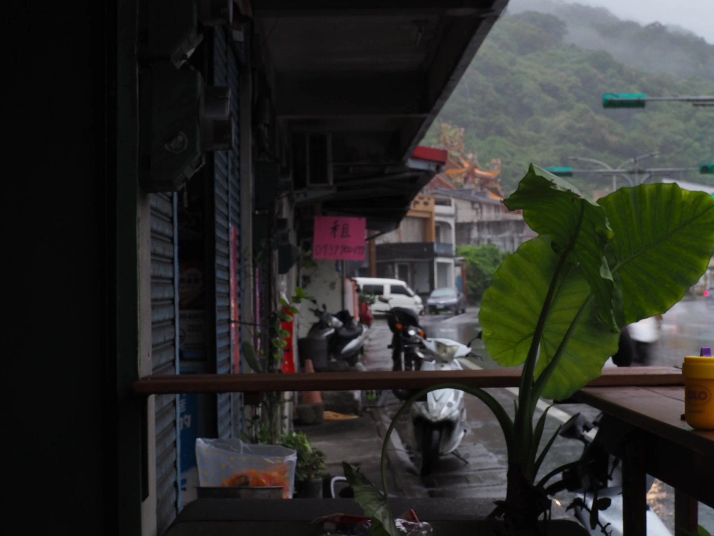


+86 134 2588 4511 · 广州 / 佛山